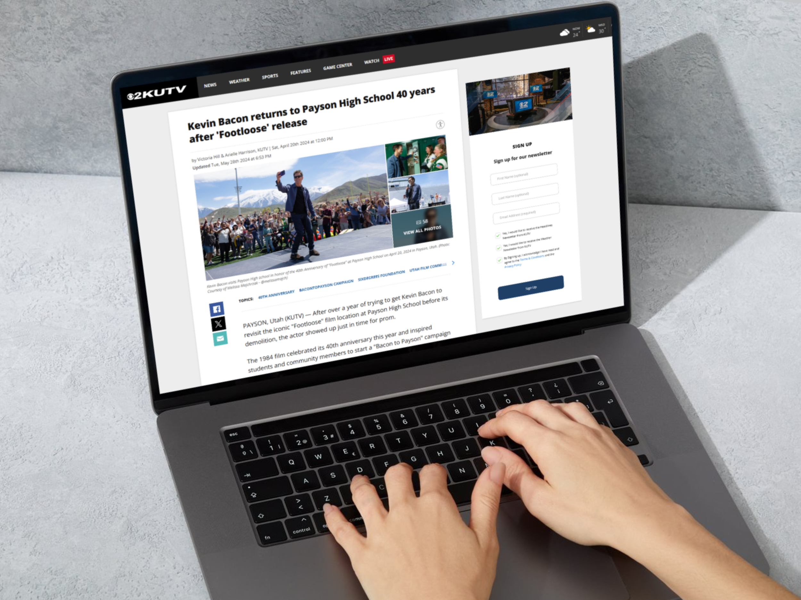
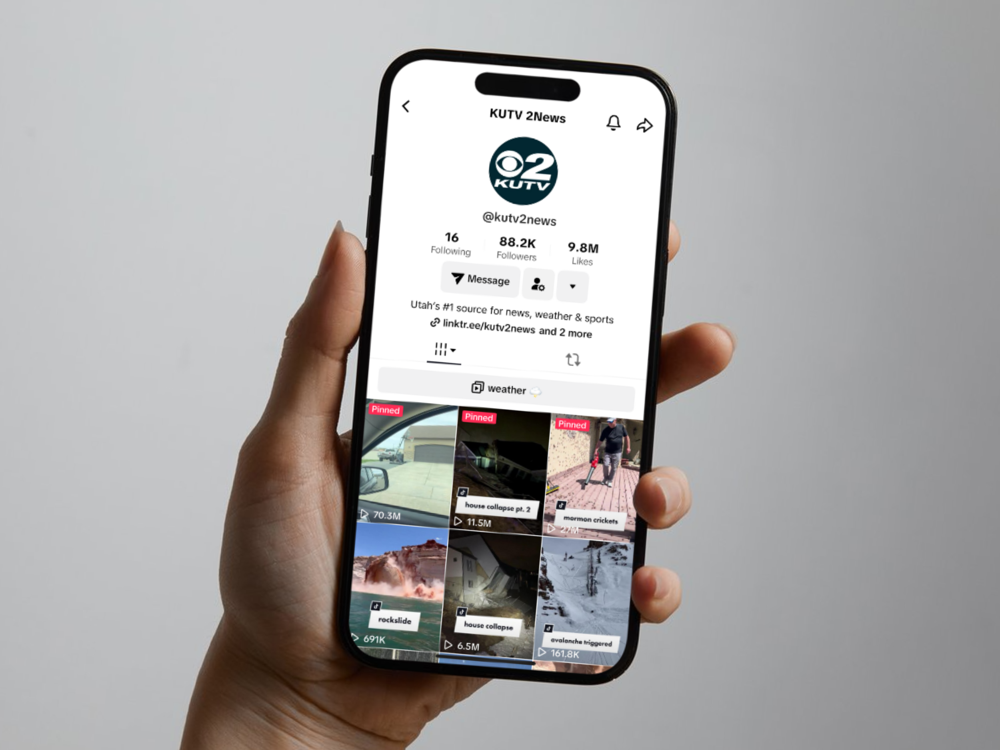

At KUTV, Utah's most-watched news station, I played a key role in expanding the station's digital reach by creating compelling multimedia content and optimizing performance across platforms.
I helped develop YouTube strategies that grew the channel from 1.3 million to 35.6 million views in one year and took initiative to launch KUTV's TikTok account, which gained over 65 million views in my last two months of the role alone. I engaged audiences through social media, articles, and interactive graphics while aligning with newsroom objectives and breaking news coverage.
Duration
Aug. 2021 - June 2024
Location
Salt Lake City, Utah
News article samples
I wrote and assisted reporters with dozens of stories each week in a top 30 media market, managing high-stress situations and tight deadlines. My coverage ranged from local successes to in-depth investigative pieces, reaching audiences across Utah and beyond. Every story required sharp writing, clear communication, and a commitment to accuracy, all while optimizing content for digital platforms.
See moreSocial media success
I engaged with over 400k combined followers, creating multimedia content for Facebook, X, Instagram, YouTube, TikTok, and Threads. By optimizing posts and analyzing performance metrics, I helped grow KUTV's YouTube page from 1.3 million to 35.6 million video views in just one year. Within my first four months, I also took initiative to launch KUTV's TikTok page, which now has nearly 10 million likes.
See more